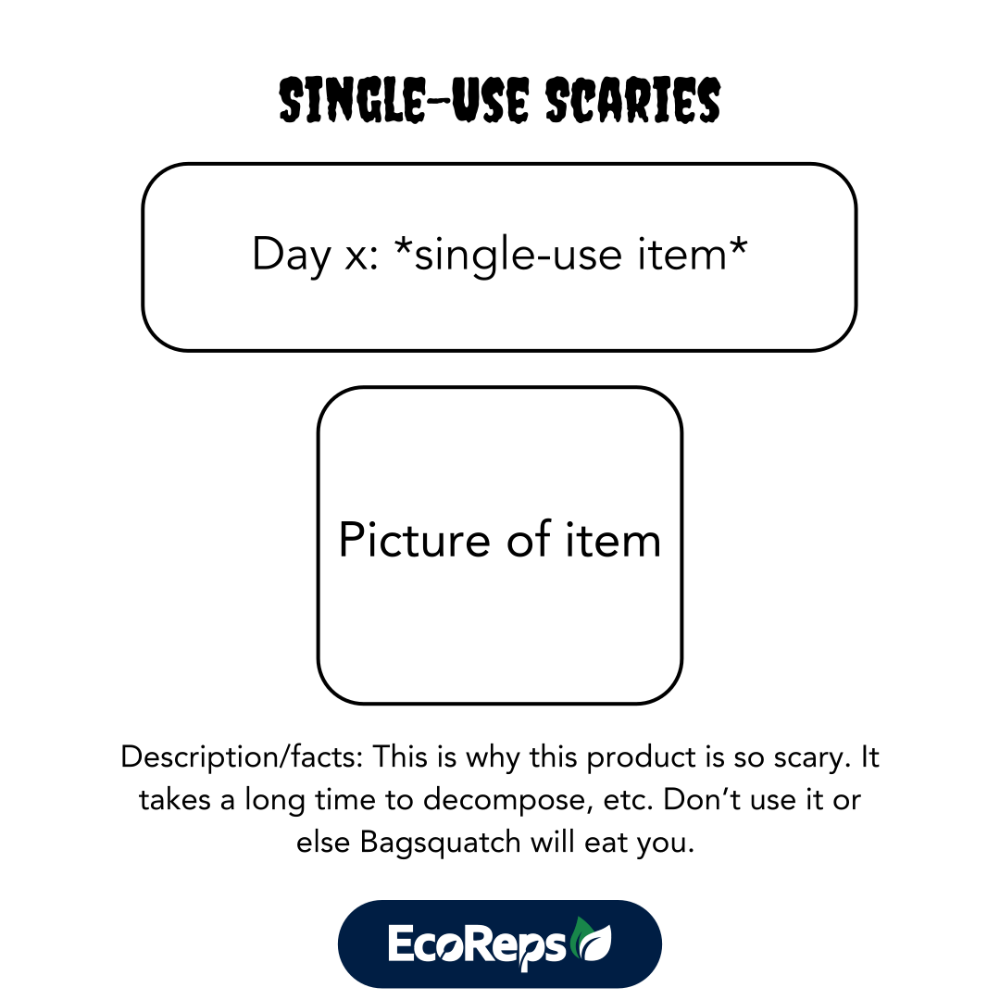
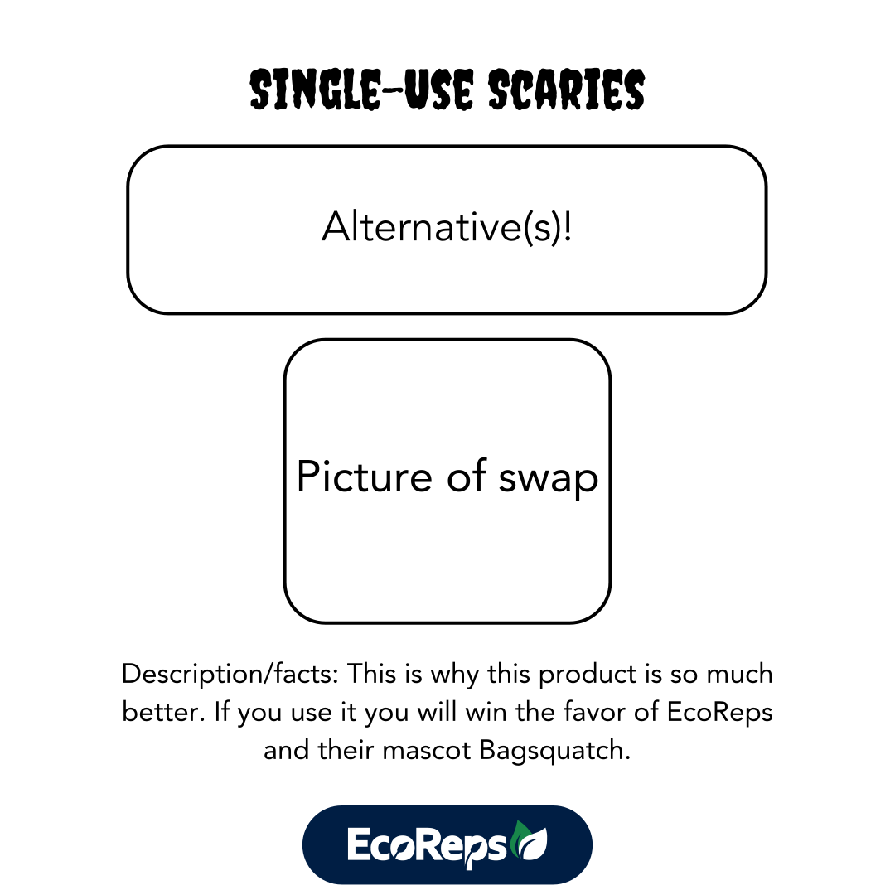

EcoReps Marketing
Key Accomplishments
As Marketing Coordinator for Penn State EcoReps, I managed a committee and established clear brand guidelines to ensure design and visual consistency across all materials. I mentored team members on best practices for effective branding and design, helping to elevate our overall communication. I led several Instagram campaigns featuring engaging visuals that increased audience interaction. Additionally, I created promotional materials such as stickers, flyers, and infographics to support our outreach efforts. I also played a key role in growing our presence on TikTok and LinkedIn, expanding our digital engagement and community reach.
Social Media
Coming into this role, I knew that Instagram had been our main form of social media outreach. My goal as the Marketing Coordinator was to take our Instagram presence to the next level by prioritizing high quality content that engaged followers, rather than producing large amounts of passive content that is easily forgotten.

The previous Marketing Coordinator expressed a desire
to have a cohesive, visually appealing feed.
I used my experience creating style guides to put together
a document with general brand guidelines
for my committee and I to follow.
The inspiration for these styles comes largely from the UN's chart Sustainable Development Goals,
which is also the basis for the majority of EcoRep's programming and education. Additionally the use of bright
colors serves to convey an energetic, playful tone for our communications, since we wanted
sustainability to appeal to students in a fun, nonthreatening way.
The first Instagram campaign I launched with my committee was the Single Use Scaries series.
This project aimed to inform students about the "horrors" of using single-use plastics such as
plastic utensils, cups, bags, and more, while incorporating a Halloween theme to go along with
the month of October.
Everyday for six days, we posted a graphic with a single-use item, a description of why it
is so harmful, and another slide with an alternative and a description. This all led up to
the final day of the campaign, where we announced a giveaway for students who posted or sent in
a picture of them using one of the sustainable alternatives mentioned.
To ensure visual consistency across the posts, I created a template to follow, as shown below.
I then assigned each of my committee members a single use item to create their post about, and
created a schedule so we knew who was posting on which days.


Our campaign sucessfully increased students' awareness of the harmful effects of single use plastics and other materials. This is evident from the 100+ likes and comments earned collectively, as well as 35 submissions for the final giveaway. Additionally, the coordination of the posts created a visually cohesive look for our feed.


Another challenge I was tasked with was creating a campaign leading up to an annual EcoReps
event, America Recycles Day. I collaborated with the ARD coordinator and her committee to come up with interactive
posts that would create excitement for the event, while also educating our social media followers
on effective recycling habits.
For the campaign, we planned out eight posts that would lead up to November 15th, which
is recognized as America Recycles day of National Recyling Day. The ARD committee wrote drafts
of their content ideas, which my team and I translated into designs for them to review. We then iterated
based on their feedback to best support their event.
The introductory post served as a simple heads up to the holiday taking
place in a week, and established the a color scheme and font selection
for remaining posts (although we did later end up deviating from this
to add more variety to our feed.)
The following day, we posted a simple but engaging graphic challenging
users to recall their existing knowledge of recycling, prior to releasing
educational content.


Caption: "Test your recycling knowledge!
Look out for the signs above each recycling bin to make sure your
item goes in the right place. Unsure about where an item goes? Checkout
sustainability.psu.edu for more information!‼️
Comment how many you got correct!♻️
#americarecyclesday #recycle #recycling #sustainability #pennstateproud"
Photo & Video
One of the most enjoyable parts of being the marketing coordinator for such a fun group of people was the challenge of capturing the positive energy and personality of our cohort through photo. Using a Nikon D3400 with an AF-P DX NIKKOR 18-55mm f/3.5-5.6G VR lens, I captured special moments from our educational events to team bonding.
.JPG)
Photos were used for nearly all of our marketing material, primarily social media and promotional graphics and flyers. Our analytics revealed that the most popular posts on Instgram were ones that included pictures of people. Capturing the spirit of our members and the students we interact with became my goal for this reason, as well as to convey our sustainability initiatives how we want them to be seen: laid-back, fun, and interactive.
Another critical aspect of our social media accounts was creating video content for TikTok and Instagram reels. Many companies and organizations have realized the significant impact video content can have on social media content and used this to their advantage. This is especially true for organizations like EcoReps, where the target audience, largely of 18-22 years olds, are most active on platforms like TikTok and Instgram reels.
@psuecoreps Thanks for chatting with us😉 #psu #ecoreps #sustainability #fyp #pennstate #singleuseplastic #college ♬ original sound - PSU EcoReps
@psuecoreps do you see your pledge ? 👀 Join us at Old Main this Saturday at 8:30 pm for Earth Hour! #sustainability #psu #ecoreps #earthhour #fypシ ♬ original sound - PSU EcoReps
@psuecoreps We couldn’t have asked for a more perfect day at our retreat yesterday!☀️💚 #fyp #earthday #retreat ♬ tongue tied - favsoundds
This is where I had to rely heavily on my committee members for their skills and ideas. Although I did not have a lot of video experience going into this role, I knew it was something the marketing committee has been known for in the past. I was so fortunate to have committee members with so many creative insights, and particularly to have one member with extensive knowledge of video editing software to learn from and delegate tasks to.
While Instagram and TikTok served as our primarily digital platforms for engaging with students and promoting our organziation, LinkedIn proved to be an extremely effective tool for engaging with stakeholders in the Penn State community, faculty and staff members, and other professionals.

Another committee member was responsible for sharing posts to our LinkedIn feed. Together we created a content calendar for sharing events hosted by EcoReps, promoting other sustainability organzizations, and sharing professional development activities included in general meetings. Check out some of our posts highlighting events like this one! Link
Promotional Material
Stickers
For whatever reason, stickers seem to be the most sought after prize among college campuses. Creating stickers with the marketing committee was a great experience, although it did require a high amount of organization, collaboration, and timeliness.
During the ideation process, each committee member brought a sketch or prototype for a sticker idea to a marketing meeting. Everyone went above and beyond, and we were able to bounce off of each other's ideas naturally. I think it goes to show how much we had bonded as designers and teammembers.
Check out some of the stickers that were added to the EcoReps collection during my time as Marketing Coordinator.


Flyers
Every month, EcoReps comes out with flyers known as "Stall Stories" describing our upcoming events and initiatives. These are hung in the bathroom stalls of first-year dorm bathrooms and common areas around campus. Although it may be a strange setting, Stall Stories have consistently proven to be one of our most effective marketing initiatives. As a result, it is critical that they are designed in a way that is visually engaging while also conveying important information accurately.


Reflections
EcoReps was one of my favorite organizations to be part of during my undergraduate career, hence why I stayed with them
for all four years. My experience as the Marketing Coordinator taught me so much about myself and my leadership style, while
also pushing me to strengthen my ability to make compelling designs efficiently with a high attention to detail.
This role required communicating with such as wide variety of people, from other committee leaders, to staff at Penn State
to my own committee members and more. I enjoyed the challenge of being part of all the projects in the organiation,
rather than being assigned a single project/event to commit all my time to.